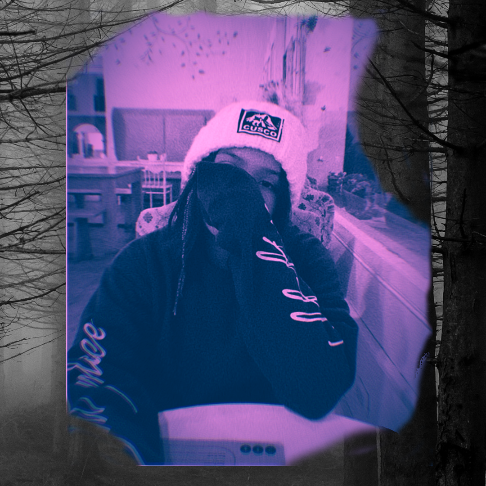
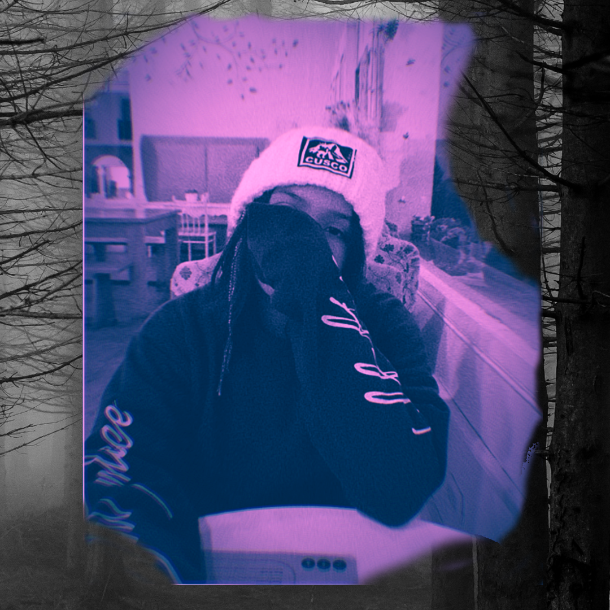
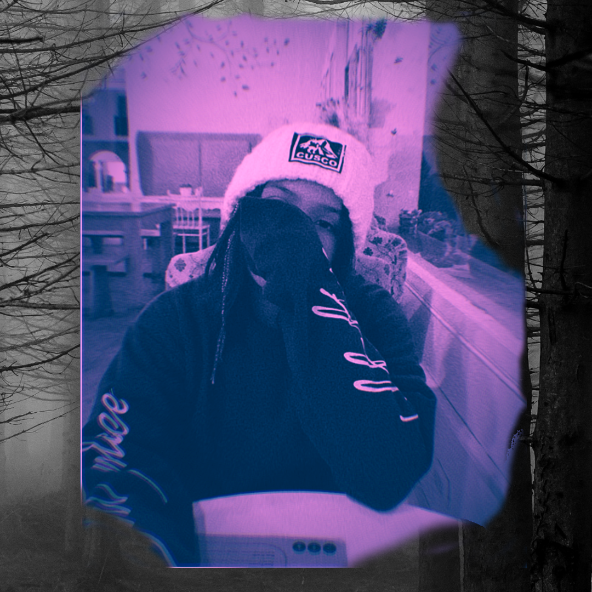

Gallery

 



No one hears any sound the same way. Every emotional and intellectual response to a song is a tangled network of deep-seated memories and social pressures. The most banal hook can inexplicably make someone cry (THEORICALLY), a lead sound on top of a kick could trigger, instantly saturate the steps of a dancer (friends and ALL), while another is shaped in that very moment your future emotional response to music.
This Album carries memories, thoughts and feelings that "Alt 4 Javier" has and presents the possibility of inspiring moments of intense and heartbreaking nostalgia in one listener, and opening new neural pathways towards deep feelings in another.
The last step for evolution and freedom, is only to learn that everything was learned with blood and sacrifice, traveling with clouds and red sky is nothing more than the speed force that reflects all the madness that you had in that hell, then a metamorphosis arrives that changes from step to step, impenetrable sound against the same, evolving your power and freedom thus giving the same response to the music.
and again Alt 4 Javier is back with the single "Steps To Freedom" giving a feeling of freedom with traces of hell and with the typical nostalgic melodies, opening a small neural path to deep feelings in another
When she thinks that she is alone, desperate and among other feelings in another world, we have to visit each side of the corners of the city to make ourselves happy in difficult moments and endure the pains that abound at night like a battle Between nostalgic melodies, new rhythms, some sadness symbolizing the feelings and at this moment make the steps of a dancer move, thus giving a warning of future emotional responses thus giving another response to the music.
Alt 4 Javier revives the album Tuda with his single "Sorrows In Night" to reach the moments in which feelings, passions and a few hints of perceptions, thus giving a result of nostalgic melodies, new rhythms, something sadness symbolizing feelings and emotions. passions At the piano it is nothing more than perceptions and a warning of future emotional responses.
The dark, melancholy time that is only a simple reflection of demons dancing at night, with love, darkness, strength and hatred in the same place trying to find other alternatives and getting used to the plot of the story.
Alt 4 Javier represents only a state of darkness and complete melancholy and silence, warning us of an indirect and heartbreaking call for help.
Spark, Passion, Melancholy and Resurrection. The Four Phases to live and express things after the passage of time and the evolution of what we do. It is nothing more than a raw thought with Dark vibes with an incredibly and inexplicably fine and elegant style to know that we have become right now.
It is not more than the three singles is a call for help from Alt 4 Javier, trying to tell us that they are in the most fallen and mediocre stage of the musical career remembering nostalgia.
If you want to know why it will close in September 2021,
click herefor more information
